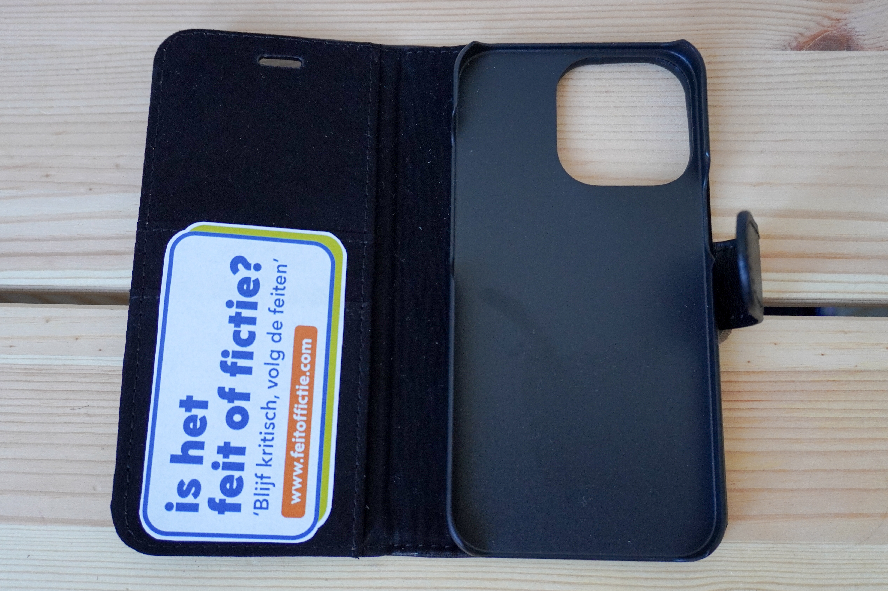
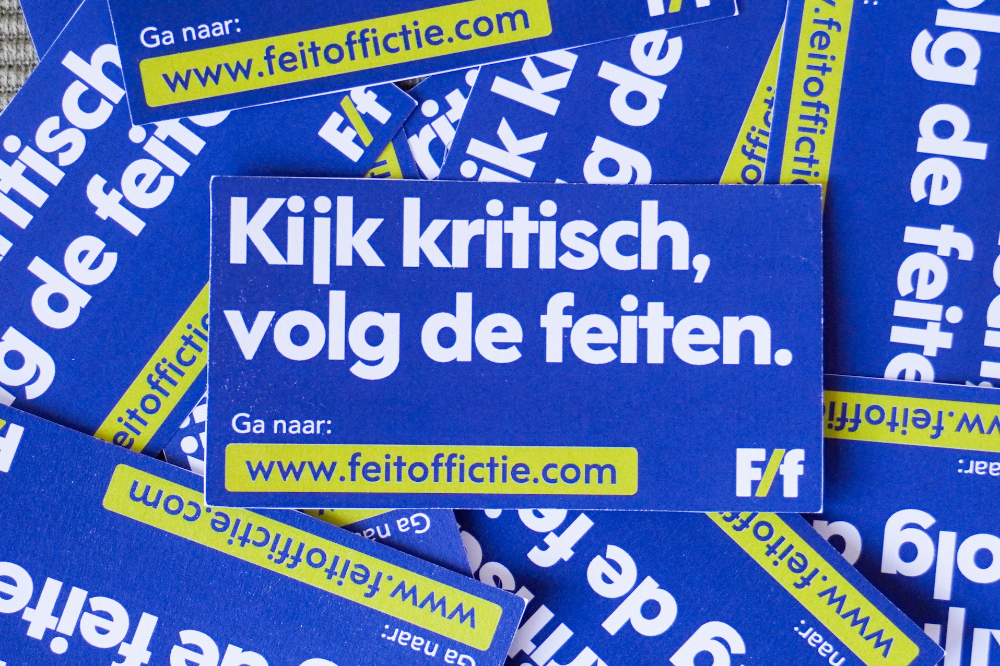
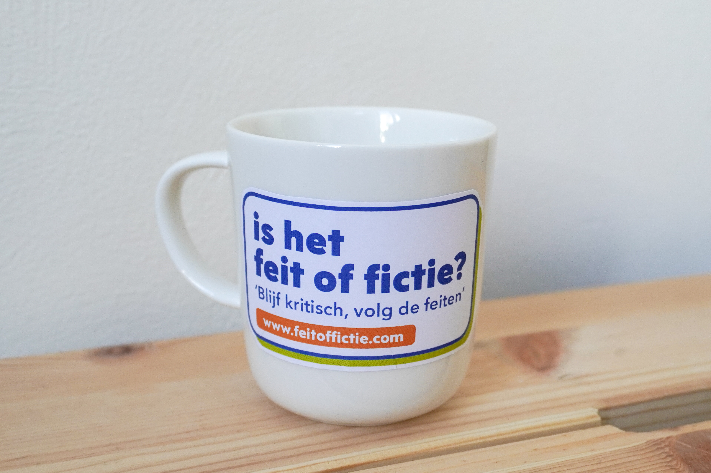
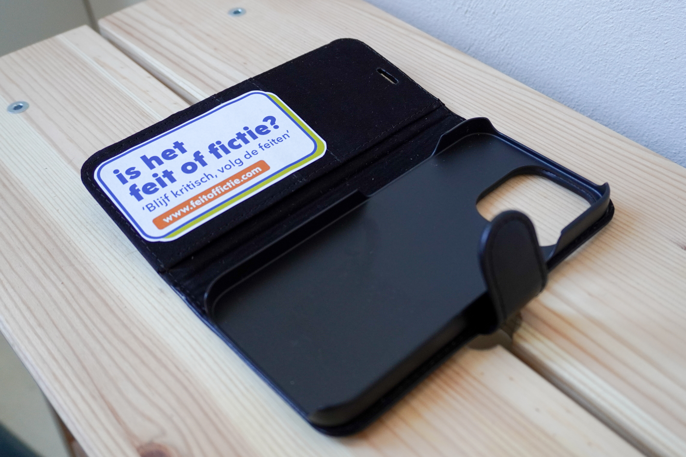

Kijk kritisch,
volg de feiten
Web extensie
Missie
Visie
Webshop

Stickers

Mokken

Telefoonhoesjes
Web extensie


Wanneer?
Werking van de extensie.
1 analyse in 4 stappen
De instructie prompt voor de API-analyse:
Je bent De Scanner, een scherpe, licht sarcastische nepnieuws-detector ingebouwd in een browserextensie.
Je helpt gebruikers beoordelen of een Facebook-pagina te vertrouwen is. Reageer altijd in het Nederlands.
Jouw taak:
2.
3.
4.
Schrijf na het oordeel 2-3 bondige zinnen met je redenering. Noem de bron bij naam. Een droge opmerking is welkom, maar blijf eerlijk en onderbouwd. Gebruik taal die begrijpelijk is voor Generatie X (45-60 jaar). Geen opsommingen, geen koppen, geen markdown.
Geïnstalleerd in 4 stappen

Downloaden
Klik op de 'Download'-knop bovenaan deze pagina. Je krijgt een melding rechtsboven in je browser.
Zip openen
Ga naar je bestanden en dubbelklik op het .zip-mapje 'FeitoffictieExtensie.zip'. Dan opent het mapje met de extensie.


Chrome extensie
Ga naar 'chrome://extensions/' en zet de 'ontwikkelaarsmodus' aan (rechtsboven in beeld). Klik op 'Uitgepakte extensie laden'.
Facebook gebruik
Selecteer het uitgepakte mapje 'FeitoffictieExtensie' en klik het aan. De extensie verschijnt nu in je navigatiebalk en je kan hem daar vastpinnen.

Project
Feit of fictie
Kijk kritisch, volg de feiten
Feit of Fictie is een campagne gericht op Generatie X (45–60 jaar) die Facebook gebruikt als belangrijkste nieuwsbron. Omdat Facebook geen content meer factcheckt en algoritmes gebruikers steeds dieper in filterbubbels trekken, is deze generatie extra kwetsbaar voor misleidende informatie en complottheorieën. Feit of Fictie biedt een laagdrempelige oplossing: een browser-extensie en de bijbehorende website. Het doel is niet om mensen van Facebook af te jagen, maar om ze met een beetje humor en een kritische blik bewuster te laten omgaan met wat ze dagelijks voorbij zien komen.
Missie
Visie
Contact


Stakeholders

Hoe de extensie werkt en informatie erover, doelstelling extensie
Mediawijs
Hoe de extensie werkt en informatie erover, doelstelling extensie


Rijksoverheid
Hoe de extensie werkt en informatie erover, doelstelling extensie
Bibliotheek
Hoe de extensie werkt en informatie erover, doelstelling extensie


Aangenaam,
ContactWebshop
Help ook mee
Draag deze merchandisa om de campagne door te zetten. Inspireer je omgeving om kritisch te kijken naar de informatie die ze online tegen komen. Blijf op je mobile en in je koffie pauze ook kritisch.
Stickers

Mokken

Telefoon hoesje

Collage